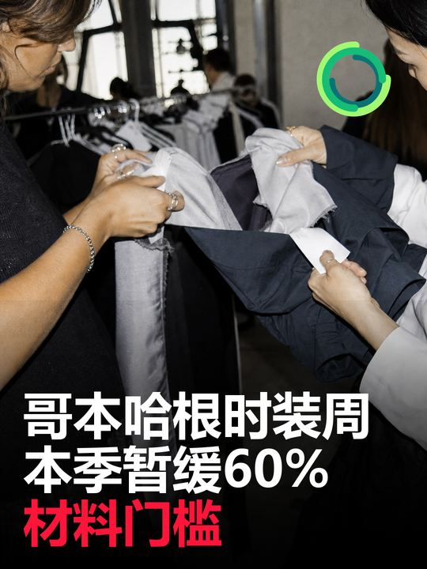
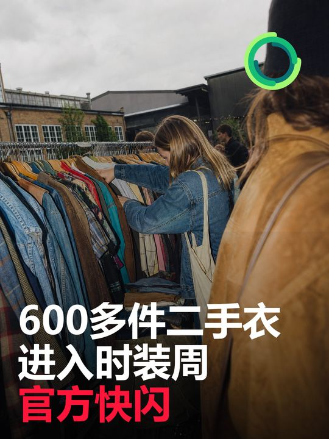

最近24—72小时内，行业最值得关注的变化不在新增回收产能，而在“什么算可持续”以及如何验证。哥本哈根时装周SS27于8月3日开幕，19项最低标准仍是官方日程的准入框架，但本季临时不执行“优选材料清单”和“至少60%系列使用认证、优选或库存面料”两项要求，原因包括“优选材料”术语缺少统一口径以及欧盟纺织品生态设计细则尚未定稿；该机构同时宣布，计划在AW27首次试点AI辅助审查品牌提交的可持续文件。对铛铛一下而言，材料标签不能只停留在“环保／再生”这样的宽泛描述，未来更有价值的是保存可核验的材质比例、来源凭证、流向记录和处理结果。
总结今日结论
美国The Bra Recyclers以返校季活动区分旧品回收与新品公益分发
- 发生日期： 2026年8月1日至31日
- 国家/地区： 美国
- 事实摘要： 内衣回收社会企业The Bra Recyclers支持其非营利伙伴The Undie Chest启动年度返校季募捐，目标为Title 1学校学生募集5000件新内衣并筹集1万美元。接收清单包括8—18岁学生的新内衣、成人尺码、文胸、运动文胸、内裤和袜子；资金用于分拣、包装与学校分发。活动明确募集新品，而The Bra Recyclers的常规业务则为品牌、零售商、回收商和个人提供旧文胸与内衣的再利用和回收路径。
- 产业链环节： 上游品类规则与公益募集；中游分拣、包装；下游学校与家庭定向分发。
- 影响判断： 低—中重要性、公益运营信号。 5000件和1万美元是活动目标，不是已完成结果。该活动不能被表述为旧内衣回收量，但它展示了卫生敏感品类需要采用不同流向和沟通规则。
- 与铛铛一下的关联： 平台应把贴身衣物拆成“未使用新品捐赠”“清洁旧品材料回收”和“不可接收”三类，分别说明包装、清洁、隐私、卫生与最终去向，避免用户把公益捐赠与材料回收混为一谈。
- 原始来源： The Bra Recyclers活动页
日韩日本、韩国暂无重要新增
日本、韩国在旧衣回收政策、品牌回收、二手流通、分拣技术和大型再生项目方面暂无重要新增。
丹麦／欧洲AI辅助可持续要求筛查计划进入AW27试点准备
- 发生日期： 2026年7月31日发布，处于本次72小时检索边界；首次试点计划用于AW27
- 国家/地区： 丹麦／欧洲
- 事实摘要： 哥本哈根时装周与监管科技公司Renoon宣布三年合作计划，将其数字产品护照平台改造成可持续要求筛查工具，使用AI辅助评估品牌提交的定性回答和支持文件。系统经过一年测试，计划在AW27首次试点，并向采用同一要求框架的其他时装周和行业组织扩展。
- 产业链环节： 材料与供应链文件数字化、品牌准入、合规筛查、数字产品护照。
- 影响判断： 高—跟踪重要性、尚未上线。 外部筛查仍由Rambøll主导，AI用于提高一致性、可审计性和效率，不应写成“AI决定品牌是否合格”。实际准确率、误判率、人工复核成本和数据安全安排尚未公开。
- 与铛铛一下的关联： 日后对接品牌或材料回收商时，可把回收批次的来源、重量、图片、材质、分拣结果、下游凭证和异常说明结构化存档，为人工抽查和机器辅助审核预留标准字段。
- 原始来源： 哥本哈根时装周与Renoon公告
舆情舆情、消费者与公益
The Bra Recyclers案例提醒，消费者通常把“捐赠”和“回收”视为同一件事，但卫生条件、物品状态与受益人需求会决定完全不同的流向。对贴身衣物，直接公开“新品捐赠／旧品材料回收／不可接收”三分法，比泛化地说“都可以回收”更能降低误投和争议。
来源来源清单
- Copenhagen Fashion Week｜Sustainability Requirements Framework：https://copenhagenfashionweek.com/sustainability/sustainability-requirements
- Copenhagen Fashion Week｜SS27 Official Schedule：https://copenhagenfashionweek.com/schedule
- Copenhagen Fashion Week｜AI-Powered Sustainability Requirements Screening System：https://copenhagenfashionweek.com/article/copenhagen-fashion-week-and-renoon-introduce-ai-powered-sustainability-requirements-screening-system
- Copenhagen Fashion Week｜Online Second-Hand Designer Pop-Up Store：https://copenhagenfashionweek.com/event/online-second-hand-designer-pop-up-store-3
- The Bra Recyclers｜Back-To-School Undie Drive：https://thebrarecyclers.com/events/back-to-school-drive
速览今日最值得关注的五条变化
- 【高】哥本哈根时装周SS27临时暂停两项材料门槛。 本季不执行“优选材料清单”和“至少60%系列使用认证、优选或库存面料”，其余最低标准仍继续作为准入框架。
- 【高—跟踪】哥本哈根时装周准备以AI辅助筛查品牌可持续文件。 Renoon系统计划于AW27首次试点，外部筛查仍由Rambøll主导，AI只承担辅助审查而不是最终认证。
- 【中】线上二手设计师店MARKED进入时装周官方活动日程。 其第四次快闪将于8月6日开放，公开称库存超过600件，并每日调整陈列。
- 【低—公益观察】美国内衣回收社会企业启动返校季新内衣募捐。 活动目标是募集5000件新内衣并筹款1万美元；它不是旧衣回收活动，但显示卫生敏感品类需要把“旧品回收”和“新品公益分发”分开设计。
- 【观察】中国、日韩暂无重要新增。 本检索窗口内未发现由权威来源确认、且达到日报门槛的新增政策、项目或品牌行动。

丹麦／欧洲哥本哈根时装周SS27暂不执行两项材料最低标准
哥本哈根时装周SS27暂不执行两项材料最低标准
- 发生日期： 2026年8月3日SS27开幕；本季适用3日至7日
- 国家/地区： 丹麦／欧洲
- 事实摘要： 哥本哈根时装周的可持续要求框架包含19项最低标准和87项可选自评行动。SS27本季临时不执行第6项“建立优选材料清单”和第7项“至少60%的系列采用认证材料、优选材料或库存面料”。官方解释称，行业对材料社会与环境影响的指导口径存在争议，Textile Exchange停止使用“preferred materials（优选材料）”一词，同时欧盟《可持续产品生态设计法规》下的纺织品授权法案仍未形成明确材料要求。官方表示将继续执行其余要求，并计划为未来版本修订第6、7项。
- 产业链环节： 设计与采购标准、品牌准入、材料声明与文件验证。
- 影响判断： 高重要性、范围受限。 这是SS27单季的临时调整，不等于取消整个可持续要求框架，也不等于品牌可以不披露其他环境与社会信息。它反映出材料评价正在从简单的“优选／非优选”标签转向需要更明确数据和法规口径的阶段。
- 与铛铛一下的关联： 平台在描述再生材料和下游流向时，应减少“环保材料”这类不可核验标签，改为记录材料名称、再生成分比例、认证或检测文件、处理商、产出物和损耗率；对外传播时把事实数据与价值判断分开。
- 原始来源： 哥本哈根时装周可持续要求框架、SS27官方日程
政策政策法规与标准
哥本哈根时装周不是政府法规机构，其可持续要求属于活动准入框架，不是法定认证或全面审计。此次临时暂停两项材料标准的原因与行业术语和欧盟规则尚未统一有关；其余包括不得销毁滞销品、实施循环行动、展陈道具寻找长期第二用途、禁用一次性塑料包装等要求仍在框架中。
资本资本、并购与项目建设
本检索窗口内暂无经官方确认的重要融资、并购或大型新增产能。Renoon合作为三年技术合作计划，公告未披露合同金额，不能据此推断为融资或大型资本项目。
建议对铛铛一下的影响与可执行建议
- 把材料证据做成字段。 新增再生成分比例、认证／检测文件、材料来源、处理商、产出物、损耗率和最终去向字段，减少不可核验的“环保”标签。
- 建立AI辅助前的数据底座。 先用人工定义必填材料和异常规则，再考虑AI读取图片与文件；没有统一字段时，AI只能放大原有口径混乱。
- 试做一次主题快闪。 从现有可再穿库存中选择一个具体主题，控制在100—200件，以三天为周期测试库存策展、现场内容和成交数据。
- 拆分卫生敏感品类。 为文胸、内衣、袜子等建立新品捐赠、旧品材料回收和拒收三套说明，并分别标注清洁、包装与去向。
中国暂无重要新增
本检索窗口内，中国在旧衣投放、分拣、再生材料、品牌回收、项目建设和交易渠道方面暂无重要新增。不重复使用前一日已收录的混合聚酯选择性解聚研究。

丹麦哥本哈根MARKED把超过600件二手设计师服装带入时装周官方快闪
MARKED把超过600件二手设计师服装带入时装周官方快闪
- 发生日期： 2026年8月1日发布；活动于2026年8月6日举行
- 国家/地区： 丹麦哥本哈根
- 事实摘要： 哥本哈根线上二手设计师店MARKED将在时装周期间举办第四次线下快闪。官方活动页称，其高端与复古服装库存超过600件，活动期间每天调整选品，并提供快闪限定商品；活动面向公众开放。
- 产业链环节： 下游二手精选、线上平台线下化、快闪零售与库存轮换。
- 影响判断： 中等重要性、渠道信号。 官方页面只证明活动安排和公开库存规模，未披露成交、复购、寄售来源、鉴定成本或售罄率。其价值在于二手渠道不再只依赖长期门店，而是借时装周流量用短期策展方式提高库存可见度。
- 与铛铛一下的关联： 可从现有可再穿着库存中测试“主题选品包＋限时快闪”，按颜色、材质、年代、场景或品牌风格组织，而不是一次展示全部库存；必须同时记录进店率、试穿率、成交率和活动后剩余库存流向。
- 原始来源： 哥本哈根时装周MARKED活动页
品牌品牌、平台与竞品
MARKED说明，二手平台可以把线上库存转化为与时装周、展会或城市活动绑定的短周期线下场景。The Bra Recyclers则展示了另一种分工：营利主体负责旧品再利用／回收能力，非营利伙伴负责新品公益募集和分发。两者共同说明，渠道定位越明确，用户越容易理解物品最终会去哪里。
贸易价格、供需、贸易与渠道暂无重要新增
本检索窗口内，旧衣收购价、分拣料价格、再生纤维价格、二手出口量和主要贸易规则方面暂无重要新增。MARKED公开的“超过600件”是库存规模，不是销量或市场供需指标。
跟踪值得持续跟踪的信号
- 哥本哈根时装周何时发布第6、7项最低标准的修订版本，以及“优选材料”是否被更具体的生命周期或法规指标替代。
- AW27的AI筛查试点是否公开准确率、人工复核、品牌申诉、数据权限和成本数据。
- MARKED快闪是否公布成交率、日更选品方法、寄售结构与活动后库存流向。
- The Undie Chest是否公布5000件与1万美元目标的最终完成情况，以及旧品回收与新品分发的协同数据。